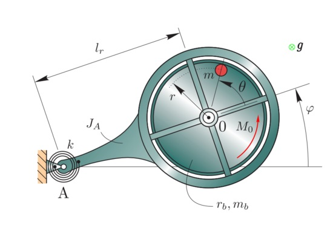

Lagrangian Dynamics.
This post will show how to derive and solve equations of motion of dynamic systems of multiple degrees of freedom.
Dynamic System
Here is an example of a 2-degree of freedom dynamic system. 
Solving EOM using Matlab
In order to solve the equations of motion I used ode45 function in Matlab. This page shows very clearly how ode45 works.